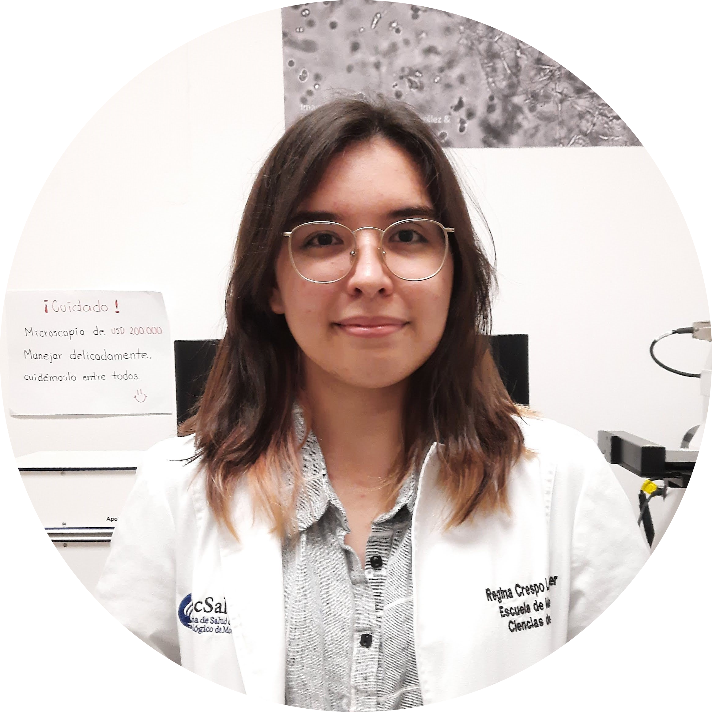

|  |
Regina Crespo Lopez OliverPronouns: She/They Asistente de Investigación en el Alvarez-Trujillo Lab Soy estudiante de Ingeniería Biomédica. Me gusta la programación, el dibujo y la animación. |
| Fechas | Puesto |
|---|---|
| 2020-Actualidad | Asistente de Investigación en el Alvarez-Trujillo Lab |
| Febrero 2020- Junio 2020 | On Campus Intern en laboratorio de Tejidos |
| Python | ⭐⭐⭐ | Ilustración y Dibujo Digital | ⭐⭐⭐⭐⭐ |
| Solidworks | ⭐⭐⭐⭐ | Programación Web | ⭐ |